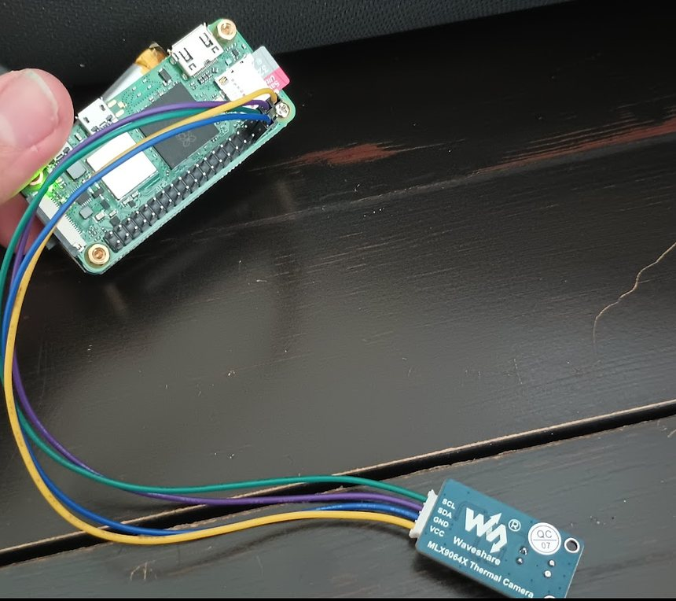
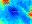
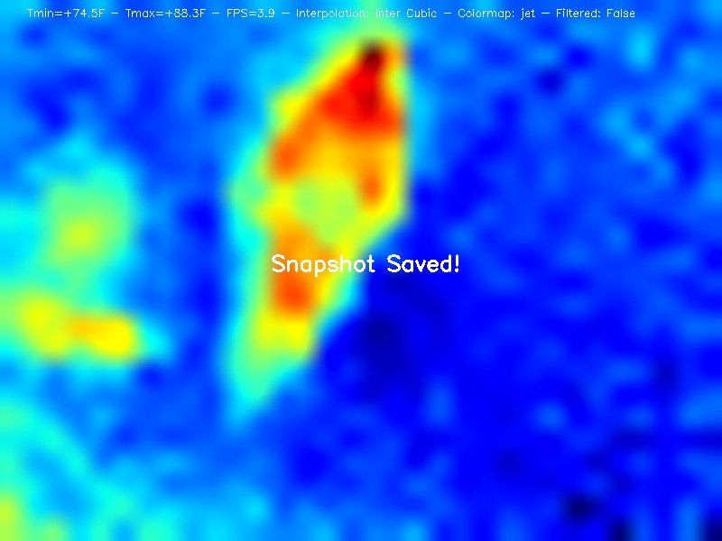
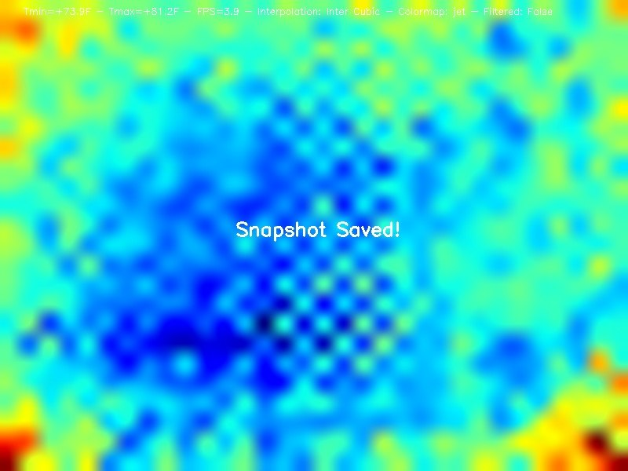
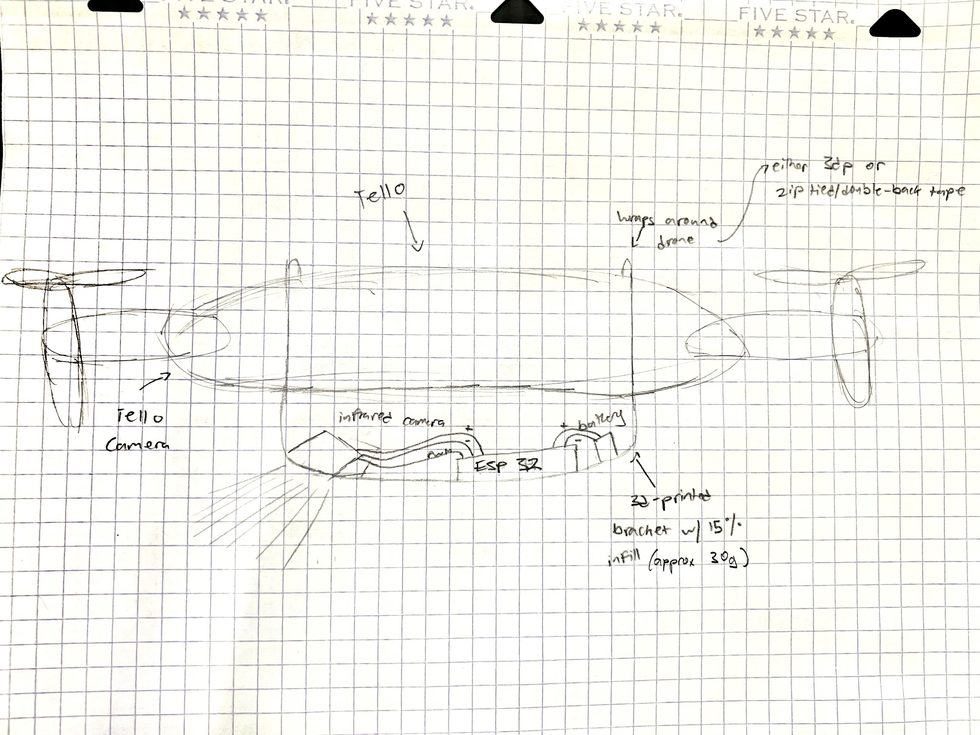
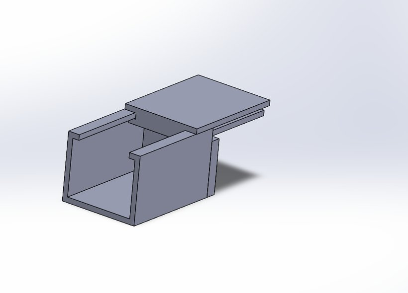

The problem
Search-and-rescue drones with thermal cameras exist, and they work. The constraint is not the hardware — it is that a trained operator has to sit and watch the live feed, and there are only so many of those people. Officials run drills specifically to recondition how they read thermal footage, because spotting a human-shaped heat signature in clutter at speed is a learned skill that degrades with fatigue.
Meanwhile there are roughly 782,000 drones registered in the United States, and almost none of them are SAR-equipped. The gap is not aircraft. It is the thermal-plus-analysis payload, and the trained attention to run it.
This project came out of the aftermath of the 2024 Maui fires and Turkey earthquakes — events where the search area was large, the response window was short, and the number of qualified thermal operators was the binding constraint.
The approach
Rather than design another SAR drone, I built an attachment: a self-contained thermal camera and inference module that mounts to drones people already own. A region that cannot fund a fleet of specialized aircraft can often still put an existing drone in the air.
That framing set the hard engineering constraint. Common consumer drones have a small maximum payload, so every part — camera, compute, enclosure, mounting — had to come in under 150 grams total. Most of the design iteration was spent inside that budget rather than on the model.
The hardware

The compute is a Raspberry Pi Zero 2 W and the sensor is an MLX90640, talking over I²C. Results come off the aircraft over Bluetooth RFCOMM. Both parts were chosen for grams first: together they are a small fraction of the 150 gram budget, which left room for the enclosure, mounting and battery.
The Pi Zero 2 W has 512 MB of RAM. That single number is why model size mattered so much — it is not an abstract preference for small models, it is the ceiling the whole thing had to fit under.
What the sensor actually sees
The MLX90640 is a 32×24 infrared array. 768 temperature readings per frame, at just under 4 frames per second. Everything downstream is built on that.

Upscaled with bicubic interpolation and a jet colormap for the human operator, the same data looks like this:


Worth being clear about what that upscaling is and is not. An 800×600 thermal frame holds 480,000 pixels interpolated from 768 real measurements. The interpolation makes the image legible to a person; it adds no information. I trained early models on the upscaled frames anyway, which in hindsight was mostly a way of making a very small dataset look larger than it was.
Classification
The onboard model answers one question per frame: is there a person in this thermal image. Not where — whether. For a first pass over a search grid that is the useful question, because the drone already knows its own position when the frame is captured, so a positive classification plus telemetry is a map coordinate.
Inference runs on the aircraft rather than on a ground station. That was the point of the whole architecture: a search drone that has to ask a ground station what it is looking at has made its radio link a single point of failure, in exactly the conditions — disaster zones — where links are least reliable. Training ran on a separate machine; the payload only ever runs inference, which is what let the compute stay inside the weight budget.
Making it fit
The 150 gram budget is what decided the model architecture, not accuracy. A lighter model means less memory, which means a smaller and lighter compute module, which is the difference between a payload that flies on a consumer drone and one that does not.
I built a CNN from scratch first. It worked, but it was the wrong shape for the constraint: it flattened a 21×21×64 feature map into 28,224 values feeding a dense layer, and that single layer held 1,806,336 parameters — 97% of the entire network. The whole model came to 1.86M parameters, 7.11 MB in float32.
Replacing it with a MobileNetV2 (α = 0.35) transfer-learning model cut that to 538,508 parameters and 2.05 MB. The saving is structural rather than incidental: MobileNetV2 ends in global average pooling, so the classifier head sees 1,280 features instead of 28,224 and costs 128K parameters instead of 1.8M — a 14× reduction in the head alone, before counting the depthwise-separable convolutions in the backbone.
- From scratch
- 1,862,850 params · 7.11 MB · Flatten → 28,224 features
- Deployed
- 538,508 params · 2.05 MB · GlobalAvgPool → 1,280 features
- Result
- 3.5× smaller, inside the payload budget
The lesson I actually took from this one: the interesting constraint was never the accuracy number. It was that a model has a physical size, and on an aircraft that size is measured in grams.
Building the thing
Around the model sits the rest of the stack, written in Python and Java: flight path planning for search patterns, and onboard sensor fusion to combine thermal hits with positional data. It started on graph paper.

The enclosure went through several CAD iterations, each one a negotiation with the weight budget: enough structure to protect the boards and hold the sensor pointed down, not a gram more.

Python · Java · TensorFlow/Keras · MobileNetV2 · Raspberry Pi Zero 2 W · MLX90640 · I²C · Bluetooth RFCOMM · CAD
What I took from it
The interesting failures were not model failures. They were the places where ML, embedded software, and physical hardware had to agree with each other in the same airframe — weight against compute, inference speed against classification quality, battery against search area. Any one of those is tractable alone. The project was the negotiation between them.